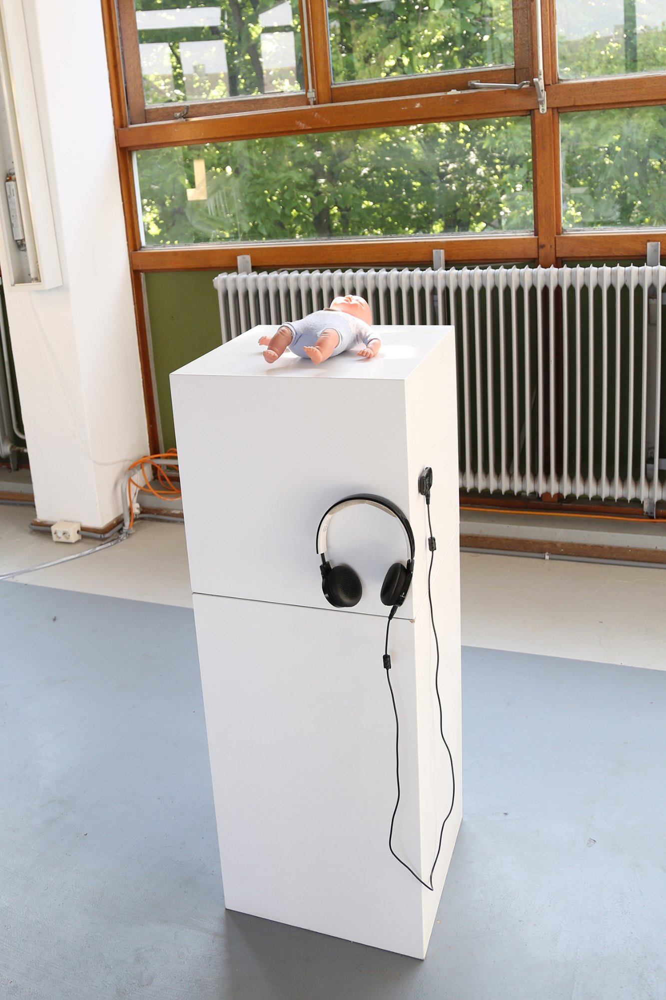
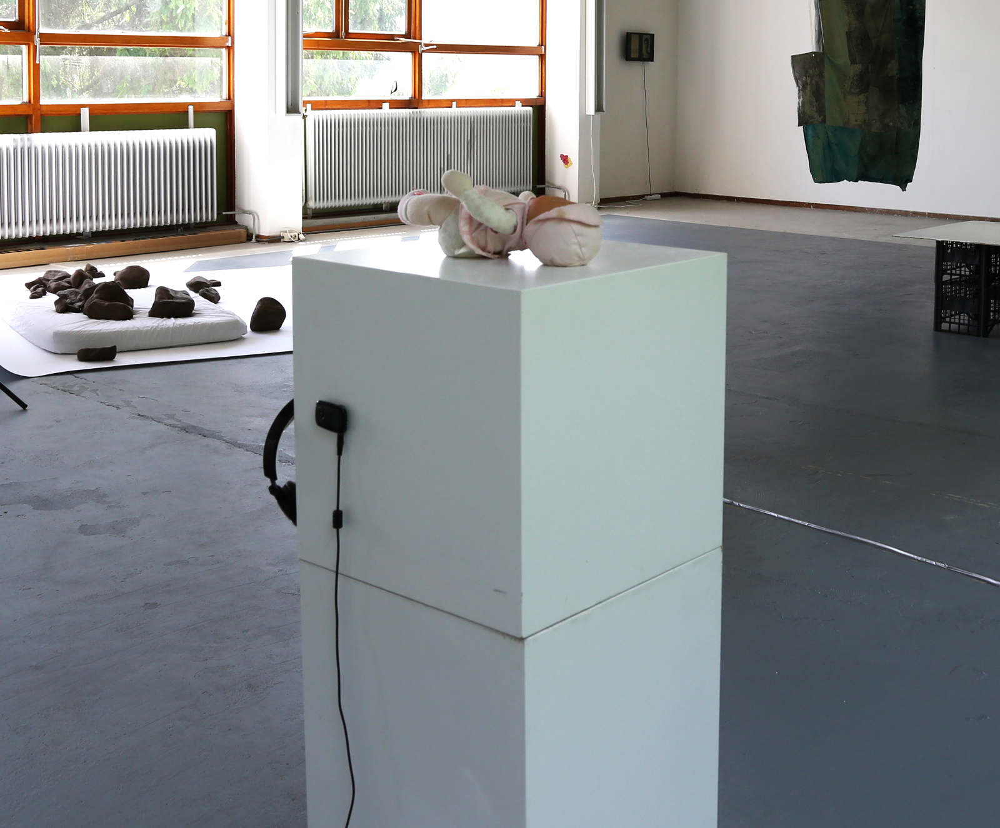

taking care of a baby shouldn't be a female task: take this doll with you and give it to a boy who still doesn't have one (cuidar de um bebê não deveria ser uma tarefa feminina: pegue esta boneca e a dê a um menino que ainda não possui uma)
taking care of a baby shouldn't be a female task: take this doll with you and give it to a boy who still doesn't have one
(cuidar de um bebê não deveria ser uma tarefa feminina: pegue esta boneca e a dê a um menino que ainda não possui uma)
2017
instalação interativa (interactive installation)
boneca, tocador de mp3, fones de ouvido (doll, mp3 player, headphones)
3’23”audio: lullaby: ioannis tzaninnis, christian camilo, giorgio xenofonte, vicente petry e sergio bittencout
www.soundcloud.com/ceciliacavalieri/taking-care-of-a-baby-shouldnt-be-a-female-task


2017. re: production. mothers in arts residency. amsterdam.